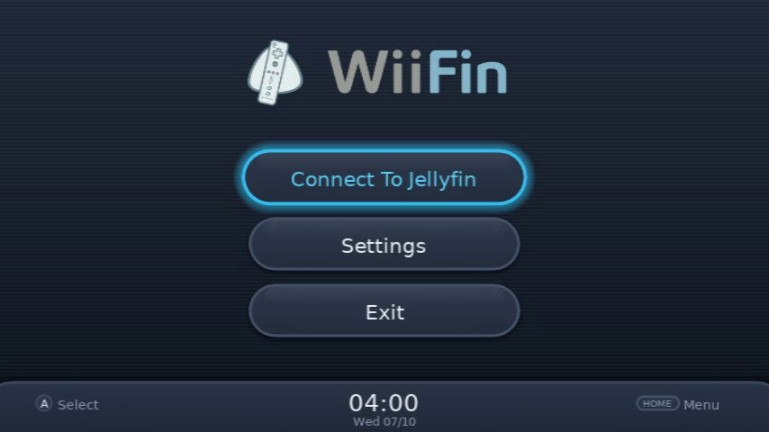
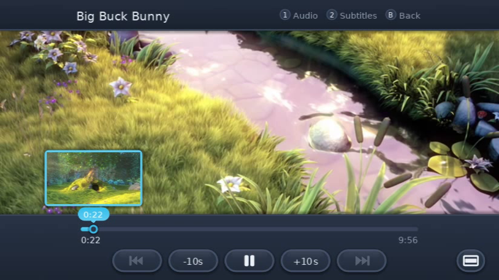

Your media collection running with Jellyfin on the Wii and vWii
For the Homebrew Channel, the Wii Menu (Wii and vWii) and Dolphin. Free and open source under the GPLv3.
Your media collection running with Jellyfin on the Wii and vWii
For the Homebrew Channel, the Wii Menu (Wii and vWii) and Dolphin. Free and open source under the GPLv3.
sd:/apps/WiiFin/What it does
Your Jellyfin server converts what the Wii can't play, as it plays. Everything else happens on the console: browsing, the player, the music and your settings.
WiiFin-XE is a client, not a standalone media center. The Wii's hardware cannot host your media library or convert high-definition videos on its own. Instead, it connects to a separate Jellyfin server running on your home network.
What is Jellyfin? Jellyfin is a 100% free, open-source media system that organizes your movie, TV series, and music collection. If you don't have a server running yet, download and install Jellyfin for free on Windows, macOS, Linux, or Docker at jellyfin.org, then follow our Server Setup Guide.
Looking to play files directly from your SD card or USB hard drive without a server? Check out WiiMC for Local Media.
Browse in rows or a grid of libraries. Resume, skip intro and credits, jump to chapters with pictures, and go on to the next episode.
A Now Playing screen with five visualizers and synced lyrics. Your music keeps playing while you browse.
Several accounts and servers, each with its own picture, theme and passcode. Your Miis can be the pictures.
Change any colour on the Wii and save it as a theme. Each theme is a short text file, easy to share.
Wii Remote (Wiimote) & Nunchuk, GameCube controller, Classic Controller, wireless Wii U Pro Controller (Bluetooth only, due to hardware limitations), Nintendo Switch Pro Controller (USB), Sony DualShock 4 and DualShock 3 (USB), wired Microsoft Xbox One (USB), and USB mouse or keyboard. DualSense, Xbox 360 and generic USB gamepads should also work. No sensor bar needed.
Fit the picture to a TV that crops its edges, and save a fit for each TV. Solid colours for screens that show banding.
New in XE
WiiFin-XE is built on WiiFin by fabienmillet. These are the main additions.
On the TV




Big Buck Bunny © Blender Foundation, peach.blender.org (CC BY 3.0). Pill by Heuse & Zeus X Crona feat. Emma Sameth, NCS.
Install
You need a Wii with the Homebrew Channel, and a Jellyfin server running on your computer or local network. Setting up the server covers the server side.
Download v1.0.0-rc3-xe.1 and unzip WiiFin-apps.zip (or WiiFin-hbc.zip) at the root of the SD card. Everything goes in apps/WiiFin/ (you can also transfer files over your network with ftpii).
Open the Homebrew Channel and choose WiiFin-XE, the jellyfish icon.
Discover finds your server. Sign in with your password, or approve the Wii with Quick Connect from your Jellyfin dashboard (it doesn't have to be from your phone).
For a channel on the Wii Menu, install WiiFin.wad with a WAD manager (vWii too). In Dolphin, open WiiFin.dol.
Controls
Every screen works with the D-pad. The hints on screen change to match the controller you used last. The user guide has the full list.
| Wii Remote (Wiimote) | Classic / Wii U / Switch Pro | Microsoft Xbox (One / 360) | Sony PlayStation (DS3 / DS4 / DualSense) | Generic USB Gamepad | GameCube Controller | Does |
|---|---|---|---|---|---|---|
| A B | a b | A B | ✕ ○ | 1 2 | A B | Select, back |
| 1 | y | X | □ | 4 | Y | Search, favourite, audio track |
| 2 | x | Y | △ | 3 | X | Sort and filter, expand a row, subtitles |
| − + | L R | LB RB (or LT/RT) | L1 R1 (or L2/R2) | L1 R1 (or L2/R2) | L R | Tabs, pages, previous and next |
| HOME | HOME | X (or View+Menu) | PS (or Share+Options) | Select+Start | START | The HOME menu |
| USB Keyboard | USB Mouse | Does |
|---|---|---|
| Enter / Esc | Left / Right Click | Select, back |
| Arrow Keys | Scroll Wheel | Navigate menus, seek in player, scroll |
| F1 / F2 | — | Search, favourite, sort, subtitles |
| Page Up / Down | — | Tabs, previous and next episode |
| Direct Typing | Pointer Movement | Type in search and server URL / aim pointer |